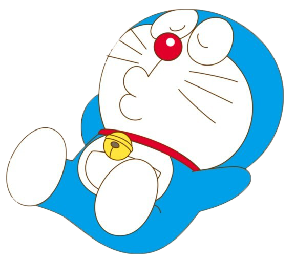

 日文名稱 對於哆啦A夢的名稱由來，有眾多不同說法。 在2112年哆啦A夢誕生片尾中，提到作者對哆啦A夢造型的靈感來自是來自「不倒翁」和「野貓」，因此一般認為， 「ドラえもん」中的「ドラ」（dora）是來自「野貓」（どら猫，doraneko）。而「えもん」（emon）（衛門）， 是日本江戶時代常見的人名，藤子·F·不二雄許多作品主角都慣以某某「衛門」來命名，例如《21衛門》（21エモン，英譯21emon）。 香港媒體在報導中曾提及「哆啦A夢」的日文意思是「紅豆包的守護者」。[16] 而中國媒體也有另外說法，「ドラえもん」這個名字由「ドラ」和「えもん」兩個部分組成，其中「ドラ」意為「神賜的禮物」， 而「えもん」是日文「衛門」的讀音，「ドラえもん」也就是相當於守護天使的含義。也有一說指名稱是來自「Dream」一詞。
中文譯名 官方譯名「哆啦A夢」是直接根據原作的日文原名「ドラえもん」（Doraemon）音譯而來。 然而1990年代或之前的港台盜版時期，哆啦A夢的漫畫，在華人地區各有不同名稱。 單是台灣就有機器貓小叮噹（青文出版社早期）、超能貓小叮噹（東立出版社早期）、 神奇小叮噹（大然文化早期）、小叮噹（陽銘書局早期）等，中國為機器貓（人民美術出版社）， 香港就有叮噹（海豹叢書、玉郎漫畫、TVB）等等譯稱。 藤子·F·不二雄病逝之後，朝日電視台繼承《哆啦A夢》的著作權， 並依其遺願「希望亞洲地區統一改以日本音譯，使每個不同地方的讀者只要一聽就知道在講同一個人物」； 於是促使台灣大然文化在1997年以《哆啦A夢》為中文名稱，發行小學館授權的《哆啦A夢》台灣中文版。 其後，台灣青文出版、香港的文化傳信、中國的吉林美術出版社（吉美）這些漫畫叢書發行代理商也陸續跟進。 電視動畫播放單位台灣華視、香港TVB和中國央視，也於2000年代初開始亦更改了譯名。至2005年，阿福、技安最後也相繼改名。